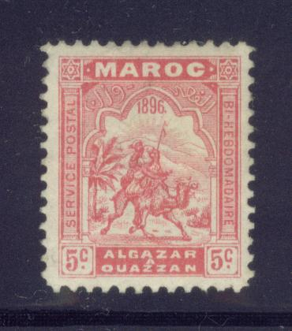
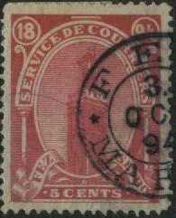
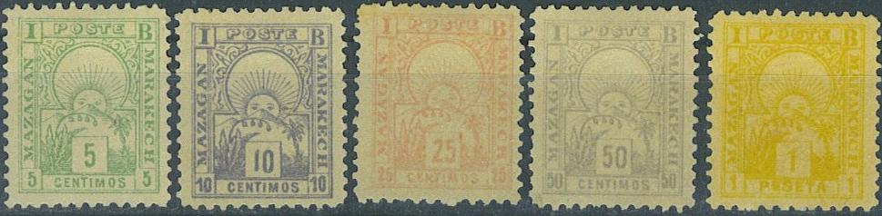
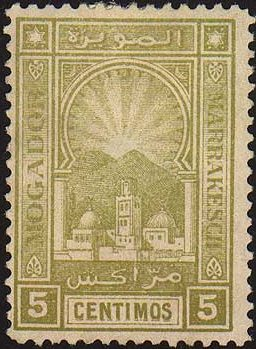
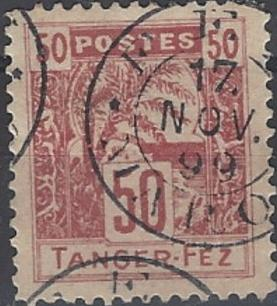

Note: on my website many of the
pictures can not be seen! They are of course present in the
catalogue;
contact me if you want to purchase the it.
Most of these stamps are not very common. Some of them are quite rare.
1896 Camel
5 c red 10 c blue 15 c orange 20 c green 40 c violet 50 c yellow 1 F brown
1897 Bird on mosque


5 c green 10 c orange 20 c red 25 c yellow 75 c blue 1 P violet 2 P green
1906 Value, inscription 'Demnat Marrakech CF'
10/20 c red

Clearly two different types, not the size of the inscription
"MARRAKECH".
1897 Local person

(Reduced sizes)
5 c green and red 10 c red and blue 15 c blue and brown 20 c brown and violet 25 c violet and green 35 c brown and red 50 c red and brown 1 F green and brown
1897 Postage due 'Chiffre taxe a percevoir', no city name indicated


(Reduced size)
5 c blue and green 10 c green and red 20 c red and brown 30 c brown and lilac 40 c lilac and brown 50 c brown and violet 60 c violet and red 1 F brown and blue
1894 Mosk


5 c red 10 c violet 25 c green 50 c yellow 1 p brown
1897
5 c green and black 10 c red and black 15 c brown and black 20 c green and black 25 c blue and black 50 c lilac and black 1 P orange and black
Inscription: 'MAZAGAN A MAROC'
This stamp has the value 25 c (red). It also exists surcharged: '10 cents' (black or blue). I have also seen a 20 c red with inscription 'MOGADOR A MAROC' in the same design.
1893 Rising sun
I think the uncancelled stamps shown above might be forgeries.

5 c green (2 types) 10 c blue (2 types) 20 c brown 25 c red 50 c violet 1 P yellow Surcharged '20 CENTIMOS' on 5 c green
Forgeries exist of these stamps (see for example http://www.filatelia.fi/forglinks/exhibit/page09.jpg).

1899 View of village
(Reduced sizes)
5 c blue 10 c red 25 c green 50 c green 75 c brown 1 P violet Sucharged (1898)


8 c (black or violet) on 10 c red 10 c (black or violet) on 25 c green 20 c (black or violet) on 25 c green
I have seen postcards in the same design in the values 5 c blue and 20 c brown. The Italian consul Mr. Morteo, together with Mr. Spiney (agent of the British post office) started this local post in 25 April 1897. The post was closed on 20 March 1900. For the specialist: the stamps are perforated 14.
1899 Man riding horse, cocks in upper corners
5 c red and grey 10 c blue and grey 20 c lilac and grey 25 c yellow and grey 50 c violet and grey 75 c green and grey 1 P red and grey
1899 Inscription 'Chiffre Taxe', no city name
5 c blue 10 c brown 20 c green 30 c red 40 c brown 50 c lilac 1 P violet
1900 Lion with flag; flag and value in red colour
5 c green and red 10 c blue and red 20 c red and red 25 c brown and red 40 c brown and red 50 c brown and red 1 P green and red
1892 Value

Image obtained thanks to Vlastimil Brabec
20 c red
1895 View of city
5 c yellow 10 c red 15 c blue 50 c brown 1 P brown Surcharged (several types)

(Reduced sizes)
'10 centimes' on 10 c green '10 centimes' on 15 c blue '10 centimes' on 50 c brown '10 centimes' on 1 P brown

If I'm informed correctly, this is a forgery, there are some
windows missing in the wall at the lower central part of the
design (just above the arabic inscription). See also
http://www.filatelia.fi/forglinks/exhibit/page09.jpg
1898 Walking man
(Reduced sizes)
5 c green 10 c red 20 c blue 30 c orange 50 c brown Surcharged
'5 centimes' (two types) on 10 c red

5 c green and black 10 c grey and black 20 c blue and black 25 c violet and black 50 c red and black 75 c olive and black 1 P red and black
I have seen several misprints of the 10 c with the '10' double. Strangely enough, only the '10' and not the word 'CENTIMOS' is printed double, example:

Overprinted 'SAFFI' in red on several stamps from other services
(Sorry, no pictures available yet, if anybody posesses a picture, please contact me!)
5 c green 10 c blue 5 c green 10 c blue
1896 Star

5 c violet 10 c red 20 c yellow 25 c blue 50 c brown 1 P brown 2 P grey 5 P green
1898 Ship
(Reduced sizes)
5 c green 10 c red 20 c olive 25 c blue 40 c brown 50 c lilac 1 P brown 2 P black
1892 Palmtree


(Reduced size)
5 c green 10 c brown (black?) 15 c blue 25 c brown (black?) 50 c red 1 F olive 5 F lilac
On letter together with a Spanish stamp and a Gibraltar stamp.
Forgeries exist of these stamps.



In the forgeries, the upper left side of the value-tablet does
not touch the tree trunk (in genuine stamps it does). Genuine
stamps are perforated 13 1/2, forgeries 11 1/2 or 12 1/2 (source
Focus on Forgeries by V.E.Tyler). They exist with forged double
ring cancel "FEZ MAROC 17 NOV 99" (see last images
above). In my view, the upper part of the "R" is also
too large in the forgeries.
1898 Person
(Reduced size)
5 c lilac 10 c blue 20 c olive 25 c green 50 c grey 1 P violet 1 P blue
1892 Lion and palm tree, inscription 'CORREOS', no city name


5 c green 10 c red 15 c grey 20 c blue 25 c lilac
1896 Star with ship and mountains in the center
5 c blue 10 c green 20 c lilac 25 c yellow 40 c violet 50 c orange 1 F brown
1897 Man on horse

(Reduced size)
5 c red 10 c green 20 c blue 25 c violet 50 c orange 1 P grey 2 P red
1897 mosk with carrier pigeon
(Reduced sizes)
5 c green 10 c orange 20 c red 25 c yellow 50 c red 75 c blue 1 P violet 2 p green


{kind=link}
{kind=link}
{kind=link}
{kind=link}
{kind=link}
{kind=link}
{kind=link}
{kind=link}
{kind=link}